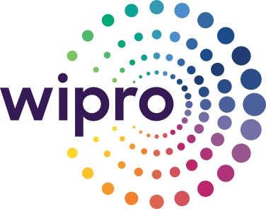
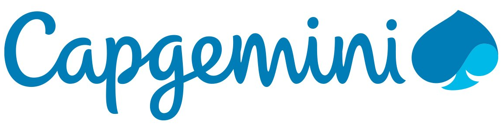
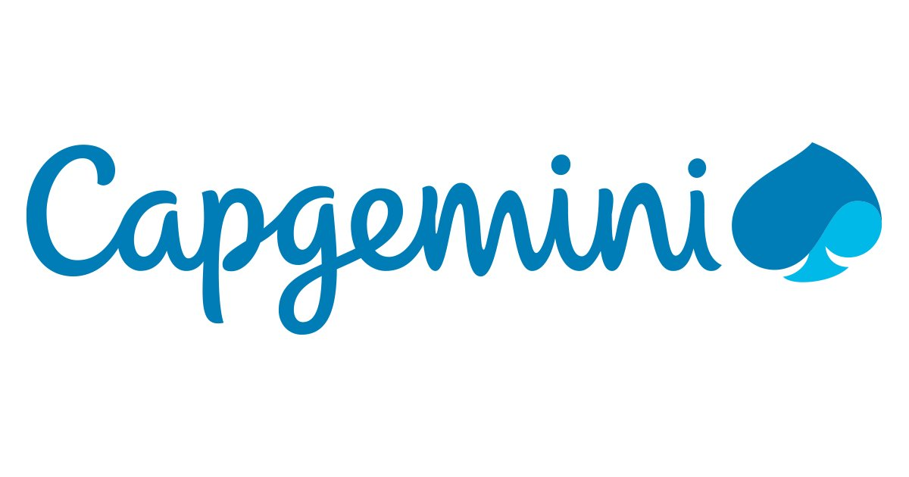
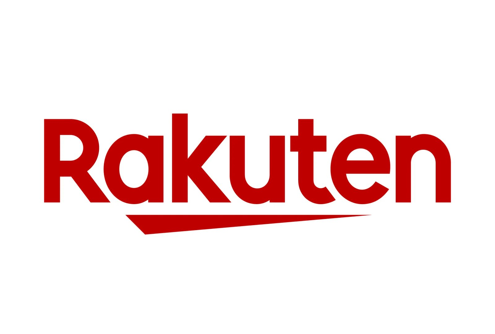

Top MNCs Actively Hiring ISTQB CTFL Certified Freshers



The globally recognized software testing credential valid in 130+ countries. Designed specifically for Fresh Graduates (2023 - 2026 batches) to bypass recruiter screening filters, master industry defect workflows, and crack the exam on the very first attempt.
Knowledge of manual testing will be an added advantage.
Recognized by TCS, Cognizant, Infosys, Wipro, Accenture & 10,000+ MNCs
Intensive Masterclass (30-45 hr optimal range)
First-Attempt Pass Rate for Freshers
Freshers Placed in Top QA Teams
Countries Recognize Your Certificate


In a hyper-competitive job market with thousands of CS/IT graduates applying for entry-level QA jobs, ISTQB CTFL gives you an immediate competitive edge over non-certified candidates.
Resumes get lost in ATS keywords filters looking for certified testing talent.
Offered standard entry-level trainee packages with slow promotion cycles.
Struggles to clearly differentiate between Error, Defect, and Failure in technical rounds.
Relying on ad-hoc testing and guessing test cases without mathematical boundary value rigor.
Recognized international credential verified on LinkedIn & IT recruiter job portals.
Qualifies directly for QA Analyst and Associate Software Development Engineer in Test (SDET) tracks.
Fluent in ISO/IEC/IEEE 29119 standards, SDLC levels, risk-based testing, and Agile quality concepts.
Calculates exact Boundary Value Analysis (BVA), Equivalence Partitioning (EP), and Decision Tables with confidence.
Aligned 100% with the official ISTQB CTFL Syllabus v4.0. We combine deep theoretical conceptual clarity with hands-on scenario problem-solving and full-length exam simulations.
Cognitive Levels: K1 (Remember), K2 (Understand)
Cognitive Levels: K1, K2
Cognitive Levels: K1, K2
Cognitive Levels: K2, K3 (Heavy Application and Numerical Problem Solving!)
Cognitive Levels: K1, K2, K3
Cognitive Levels: K1, K2
Hands-on Exam Conditioning & Placement Prep
Try this interactive 5-question sample quiz featuring real scenario-based questions from the latest CTFL v4.0 syllabus. Can you reach the 65% passing score?
Here is your ISTQB CTFL diagnostic evaluation:
See how your background and testing familiarity directly impact your first-attempt exam clearance rate and prospective starting QA compensation. See how your background and weekly study hours directly impact your projected ISTQB CTFL exam score (minimum 75%+ target) and starting QA package.
Based on historical pass data of 14,000+ Greens Technologies freshers.
Compare our 40-hour tailored fresher mentoring with other training providers and generic learning platforms.
| Feature & Evaluation Benchmark |
Greens Technologies
Fresher Special (CTFL v4.0)
|
Others
Other Training Providers
|
|---|---|---|
| Course Duration | 40 Hours Intensive (30-45 hr optimal range) | 12 - 20 Hours (Rushed) or 60+ Hours (Bloated) |
| Teaching & Mentorship Format | 100% Live Interactive Mentorship (Muthu Viswanathan, Ex-IBM Test Lead) | Pre-recorded video dumps or unmonitored mass webinars |
| Latest CTFL v4.0 Syllabus Alignment | 100% Aligned to Latest v4.0 | Often outdated (still teaching legacy v3.1 syllabus) |
| Pre-requisite Support (Manual Testing) | Free 5-Hour Primer Included for Beginners | None (Beginners struggle without foundation) |
| Full Timed Mock Exams | 5 Full 40-Q Timed Mocks + Detailed Rationale Review | 1 - 2 Static PDFs with no answer explanations |
| Fresher MNC Placement Support | Dedicated Placement Cell & MNC Referral Drives | No placement assistance or passive job links |
| Daily Doubt Resolution | 1-on-1 Daily Live Faculty Access & WhatsApp Group | Slow ticket systems or zero trainer interaction |
| First-Attempt Pass Track Record | 98.9% First-Attempt Success Rate | Standard 65% - 70% industry average pass rate |
Whether you want a rapid weekday sprint or intensive weekend deep-dives, we offer convenient batches designed around college and recruitment schedules.
Ideal for freshers seeking quick certification before upcoming campus drives.
Ideal for final-year college students or interns balancing weekday schedules.
Targeted exam clearance within 10 to 14 days with dedicated senior instructor.
Get trained directly by an industry veteran who has upskilled engineering workforces across Fortune 500 tech giants. You won't just memorize theory—you will master enterprise-grade software testing from day one.
Former Test Lead – Automation & Manual and Developer & SDET at IBM India Pvt Ltd. Muthu brings over 20 years of software craftsmanship, enterprise quality architecture, and corporate training mastery. He has delivered 200+ Corporate Trainings globally, empowering engineering teams at companies like Siemens, Capgemini, Rakuten, and IBM to build rock-solid test automation pipelines and achieve first-time-right software releases.
"Software testing is no longer just manual button-clicking—it is a respected engineering discipline. In this 40-hour masterclass, I teach you the exact industry-grade test design principles, boundary value mathematics, and defect logging techniques that I have implemented at IBM and taught to Fortune 500 engineers. You won't just clear the 65% ISTQB cutoff; you will walk into interviews thinking and answering like a seasoned SDET."
Engineers and testing teams from these leading global organizations have been upskilled through his corporate programs:
 Technology & Cloud
Technology & Cloud

Global IT Consulting
E-Commerce & Digital"When we are in a critical situation, it is his extra effort that made us reach the milestone. A knowledgeable and handy resource."
"Thank you for your wonderful training. We got non-IT resources to be part of our techno pack. This wouldn't have been possible without your guidance."
"We are really thankful for Muthu's guidance and training. Our budding team of developers got deployed to projects in less amount of time."
Daily 1-on-1 live doubt clearing • Private WhatsApp batch group • Pre-exam 1-on-1 interview confidence audit
Experience our interactive, scenario-based teaching style first-hand before enrolling. Watch how Muthu Viswanathan breaks down complex ISTQB CTFL v4.0 topics into crystal-clear concepts.
Exploring real-world failure scenarios across four live projects, identifying recurring patterns, and uncovering a common approach to failure analysis and resolution.
Understanding the 7 fundamental principles of software testing, their practical significance, and how they guide effective testing strategies in real-world projects.
Every live class is recorded in full 1080p HD and uploaded to your student portal with lifetime access, downloadable slides, and chapter mind maps.
Read how fresh graduates from 2024 - 2026 batches transformed their careers with Greens Technologies' 40-hour mentorship.
Everything fresh graduates need to know about ISTQB CTFL eligibility, syllabus version, exam booking, and career value.
Seats are strictly capped at 15 students per batch to ensure individual mentor attention and guaranteed first-attempt exam pass readiness.
Fill details to receive syllabus PDF, fee schedule, and sample mock test.